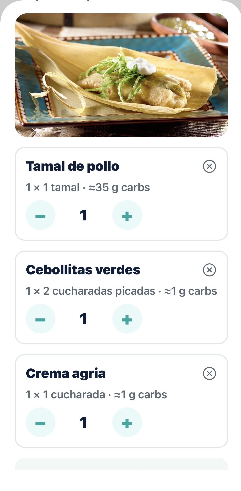

Una foto de tu plato y la IA estima los carbohidratos — hecha para la comida real y la vida real con diabetes.
📱 Muy pronto en el App Store

IA que reconoce tus alimentos al instante y estima carbs, proteína, grasa y calorías.
Tortilla de maíz vs. harina, tamales, arepas, feijoada — la comida que otras apps no entienden.
Registra antes y después de comer y mira cómo te afecta cada plato, día a día.
Tus fotos se analizan y se descartan al instante. Tus datos jamás se venden ni comparten.
Tres pasos, menos de un minuto por comida.
La IA identifica cada alimento y estima sus carbohidratos en segundos.
Las porciones siempre son editables. Tú tienes la última palabra.
Registra tu glucosa por comida y ve tu historial por día, semana y mes.
Para cualquiera que necesite saber cuántos carbohidratos hay en su plato.
Contar carbs 3 veces al día agota. Carbora lo convierte en una foto y conecta cada comida con tu glucosa.
Controla tus carbohidratos para entrenar y competir sin hojas de cálculo ni básculas.
Si cuidas tu consumo de carbohidratos, una foto basta para saber dónde estás parado.
Tus primeros análisis de foto son gratis. Tu historial de comidas y glucosa es gratis para siempre.
Carbora ofrece estimaciones aproximadas y no es consejo médico. Confirma siempre con tu equipo de salud antes de tomar decisiones de tratamiento.